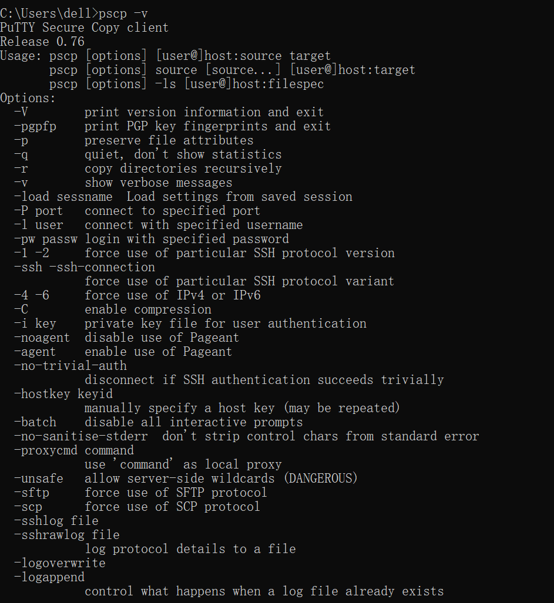
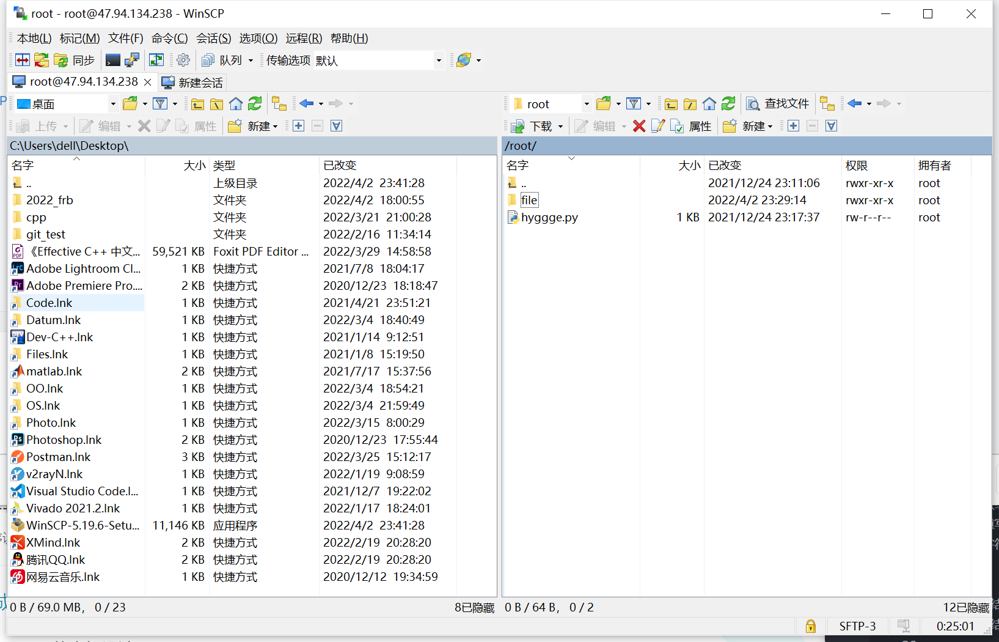

本篇博客介绍一下如何使用pscp在本地（Windows）和ECS服务器之间进行文件传输，以及如何在服务器中建立新终端。
前言
今天想把OO第一次作业的自动评测程序放到在阿里云ECS服务器上运行，以减轻笔记本CPU的压力（避免过早更换电脑）。但是理想很丰满，现实很骨感，在一开始便遇到了两个问题——
- 如何将本地的文件传到服务器上？
-
如何使程序在服务器后台运行？（一旦关闭服务器前端网页，在当前终端中运行的程序会被中断）
通过查找资料和请教同学，最终让我找到了解决方案，用本篇博客记录一下。
文件的传输
ECS服务器和本地进行文件传输的方法有很多，主要有以下几种——
- 使用Windows中自带的“远程桌面连接”
- 通过QQ软件，邮箱等第三方工具进行间接传输
- pscp
前两种方法相对比较复杂，第三种较为简单，只需要安装pscp软件，即可在cmd中通过命令实现两者之间的文件传输。
### 软件的安装
在一般情况下，pscp会和putty软件捆绑安装，我们可以直接在putty的安装目录下找到pscp.exe文件。此外，我们还可以在putty官网中单独下载pscp(下载地址)。
接下来，我们需要将pscp.exe文件放在
C:\Windows\system32\路径下。然后在命令行中运行命令pscp,如果终端有以下输出，就说明pscp配置成功了。

接下来，我们就可以快乐地通过命令行使用pscp了。（所以是不是很简单？
常用命令
只需要掌握以下pscp命令，即可实现一般的文件传输需求
将本地文件复制到服务器
pscp [file_path] [ECS_user_name]@[ECS_ip]:[target_path]如果想把桌面上的test.txt传到服务器root/file文件夹下，命令可以写为
pscp C:\Users\dell\Desktop\test.txt root@10.10.10.10:/root/file/#### 将本地文件夹和文件夹下的文件复制到服务器
只需要在
pscp后面加入-r即可pscp -r [dir_path] [ECS_user_name]@[ECS_ip]:[target_path]如果想把桌面上的
test文件夹传到服务器root/file文件夹下，命令可以写为pscp -r C:\Users\dell\Desktop\test root@10.10.10.10:/root/file/#### 将远程服务器中的文件复制到本地
pscp [ECS_user_name]@[ECS_ip] [ECS_file_path] [targt_path]如果想把服务器
root/file文件夹中test.txt传到本地desktop上，命令可以写为pscp root@10.10.10.10:/root/file/test.txt C:\Users\dell\Desktop\#### 将远程服务器中的文件夹和文件夹下的文件复制到本地
同样，只需要在
pscp后面加入-r即可pscp -r [ECS_user_name]@[ECS_ip] [ECS_file_path] [targt_path]如果想把服务器
root/file文件夹传到本地desktop上，命令可以写为pscp -r root@10.10.10.10:/root/file/ C:\Users\dell\Desktop\补充：后来我又发现了一个有UI界面的文件传输软件——WinSCP（下载地址）这个软件可以直接通过鼠标拖动来复制文件，比命令行快太多了，效果如下图所示。

建立新终端
为了使程序能够在服务器后台运行，我们可以先建立一个新终端，在这个新终端下运行我们的程序，然后暂时退出该终端即可。这样，即使服务器前端网页关闭，我们建立的新终端也不会被中断，我们的程序也会正常运行。常用命令如下——
- 建立新终端 screen -S [terminal_name]
- 暂时退出新终端 Ctrl+A+D
- 查看已经创建的终端 screen -ls
- 进入已创建的终端 screen -r [terminal_id]
(中端的id可以在screen -ls 中看到)
- 关闭新终端 exit
如果shell提示screen命令不存在，可以输入下面的命令进行安装
//第一种方法
yum install screen
//第二种方法
apt install screen